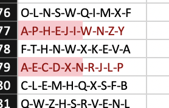
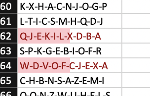
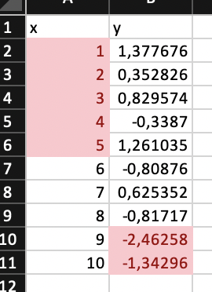

6 Conditional Formatting, Databars, and Sparklines
With openxlsx2 it is possible to add conditional formatting, databars, and sparklines to the spreadsheet as a dynamic layer to data visualization, enhancing the interpretation and analysis of information. They help with presenting complex data sets, providing a visual representation that goes beyond raw numbers. It is possible to modify each with various style options.
1. Conditional Formatting: Conditional formatting enables users to apply a cell style overlay based on predefined rules. This can highlight patterns, trends, and anomalies within the data. The rules make it possible to provide a visual highlighting without having to style every cell individually.
2. Databars: Databars are a specific type of conditional formatting that adds horizontal bars within cells to represent the values they contain. Similar to a barplot just spreading as an overlay across multiple rows. The length of the bar corresponds to the magnitude of the data, allowing for a quick and intuitive comparison between different values.
3. Sparklines: Sparklines are compact, miniature charts embedded within a single cell, offering a condensed visual representation of trends or variations in a dataset. These tiny graphs, such as line charts, bar charts, or win/loss charts, provide a quick overview of the data’s trajectory without the need for a separate chart. Sparklines are especially valuable when it is required to maintain a compact layout while still conveying the overall patterns in the data.
6.1 Conditional Formatting
Conditional formatting is helpful to visually emphasize trends, outliers, or other important aspects of the data it is applied to. In openxlsx2 conditional formatting is applied as follows:
Select dimension range: First select, the range of cells to which the conditional formatting is applied to.
Define a rule: Define a rule or condition that will be used for the formatting.
Define a style: (optional) the style used by conditional formatting of various cells can differ. This styles can include for example changes to the font, background, borders.
We will use the following workbook and the two styles to differentiate in negative and positive values.
6.1.1 Rule applies to all each cell in range

wb$add_worksheet("cellIs")
wb$add_data("cellIs", -5:5)
wb$add_data("cellIs", LETTERS[1:11], start_col = 2)
wb$add_conditional_formatting(
"cellIs",
dims = "A1:A11",
rule = "!=0",
style = "negStyle"
)
wb$add_conditional_formatting(
"cellIs",
dims = "A1:A11",
rule = "==0",
style = "posStyle"
)6.1.2 Highlight row dependent on first cell in row

wb$add_worksheet("Moving Row")
wb$add_data("Moving Row", -5:5)
wb$add_data("Moving Row", LETTERS[1:11], start_col = 2)
wb$add_conditional_formatting(
"Moving Row",
dims = "A1:B11",
rule = "$A1<0",
style = "negStyle"
)
wb$add_conditional_formatting(
"Moving Row",
dims = "A1:B11",
rule = "$A1>0",
style = "posStyle"
)6.1.3 Highlight column dependent on first cell in column
wb$add_worksheet("Moving Col")
wb$add_data("Moving Col", -5:5)
wb$add_data("Moving Col", LETTERS[1:11], start_col = 2)
wb$add_conditional_formatting(
"Moving Col",
dims = "A1:B11",
rule = "A$1<0",
style = "negStyle"
)
wb$add_conditional_formatting(
"Moving Col",
dims = "A1:B11",
rule = "A$1>0",
style = "posStyle"
)6.1.4 Highlight entire range cols X rows dependent only on cell A1

wb$add_worksheet("Dependent on")
wb$add_data("Dependent on", -5:5)
wb$add_data("Dependent on", LETTERS[1:11], start_col = 2)
wb$add_conditional_formatting(
"Dependent on",
dims = "A1:B11",
rule = "$A$1 < 0",
style = "negStyle"
)
wb$add_conditional_formatting(
"Dependent on",
dims = "A1:B11",
rule = "$A$1>0",
style = "posStyle"
)6.1.5 Highlight cells in column 1 based on value in column 2
wb$add_data("Dependent on", data.frame(x = 1:10, y = runif(10)), startRow = 15)
wb$add_conditional_formatting(
"Dependent on",
dims = "A16:A25",
rule = "B16<0.5",
style = "negStyle"
)
wb$add_conditional_formatting(
"Dependent on",
dims = "A16:A25",
rule = "B16>=0.5",
style = "posStyle"
)6.1.6 Highlight duplicates using default style

wb$add_worksheet("Duplicates")
wb$add_data("Duplicates", sample(LETTERS[1:15], size = 10, replace = TRUE))
wb$add_conditional_formatting(
"Duplicates",
dims = "A1:A10",
type = "duplicatedValues"
)6.1.7 Cells containing text
6.1.8 Cells not containing text

6.1.9 Cells begins with text

6.1.10 Cells ends with text

6.1.11 Colorscale colors cells based on cell value

fl <- "https://github.com/JanMarvin/openxlsx-data/raw/main/readTest.xlsx"
df <- read_xlsx(fl, sheet = 5)
wb$add_worksheet("colorScale", zoom = 30)
wb$add_data("colorScale", x = df, col_names = FALSE) ### write data.frameRule is a vector or colors of length 2 or 3 (any hex color or any of colors()). If rule is NULL, min and max of cells is used. Rule must be the same length as style or L.
6.1.12 Between
Highlight cells in interval [-2, 2]
wb$add_worksheet("between")
wb$add_data("between", -5:5)
wb$add_conditional_formatting(
"between",
dims = "A1:A11",
type = "between",
rule = c(-2, 2)
)
wb$add_worksheet("topN")6.1.13 Top N

wb$add_data("topN", data.frame(x = 1:10, y = rnorm(10)))Highlight top 5 values in column x
wb$add_conditional_formatting(
"topN",
dims = "A2:A11",
style = "posStyle",
type = "topN",
params = list(rank = 5)
)Highlight top 20 percentage in column y
wb$add_conditional_formatting(
"topN",
dims = "B2:B11",
style = "posStyle",
type = "topN",
params = list(rank = 20, percent = TRUE)
)
wb$add_worksheet("bottomN")6.1.14 Bottom N

wb$add_data("bottomN", data.frame(x = 1:10, y = rnorm(10)))Highlight bottom 5 values in column x
wb$add_conditional_formatting(
"bottomN",
dims = "A2:A11",
style = "negStyle",
type = "bottomN",
params = list(rank = 5)
)Highlight bottom 20 percentage in column y
wb$add_conditional_formatting(
"bottomN",
dims = "B2:B11",
style = "negStyle",
type = "bottomN",
params = list(rank = 20, percent = TRUE)
)
wb$add_worksheet("logical operators")6.1.15 Logical Operators

You can use Excels logical Operators
wb$add_data("logical operators", 1:10)
wb$add_conditional_formatting(
"logical operators",
dims = "A1:A10",
rule = "OR($A1=1,$A1=3,$A1=5,$A1=7)"
)6.1.16 (Not) Contains Blanks
wb$add_worksheet("contains blanks")
wb$add_data(x = c(NA, 1, 2, ''), col_names = FALSE, na.strings = NULL)
wb$add_data(x = c(NA, 1, 2, ''), col_names = FALSE, na.strings = NULL,
start_col = 2)
wb$add_conditional_formatting(dims = "A1:A4", type = "containsBlanks")
wb$add_conditional_formatting(dims = "B1:B4", type = "notContainsBlanks")6.1.17 (Not) Contains Errors
6.1.18 Iconset
6.1.19 Unique Values

wb$add_worksheet("unique values")
wb$add_data(x = c(1:4, 1:2), colNames = FALSE)
wb$add_conditional_formatting(dims = "A1:A6", type = "uniqueValues")6.2 Databars

wb$add_worksheet("databar")
### Databars
wb$add_data("databar", -5:5, start_col = 1)
wb <- wb_add_conditional_formatting(
wb,
"databar",
dims = "A1:A11",
type = "dataBar"
) ### Default colors
wb$add_data("databar", -5:5, start_col = 3)
wb <- wb_add_conditional_formatting(
wb,
"databar",
dims = "C1:C11",
type = "dataBar",
params = list(
showValue = FALSE,
gradient = FALSE
)
) ### Default colors
wb$add_data("databar", -5:5, start_col = 5)
wb <- wb_add_conditional_formatting(
wb,
"databar",
dims = "E1:E11",
type = "dataBar",
style = c("#a6a6a6"),
params = list(showValue = FALSE)
)
wb$add_data("databar", -5:5, start_col = 7)
wb <- wb_add_conditional_formatting(
wb,
"databar",
dims = "G1:G11",
type = "dataBar",
style = c("red"),
params = list(
showValue = TRUE,
gradient = FALSE
)
)
# custom color
wb$add_data("databar", -5:5, start_col = 9)
wb <- wb_add_conditional_formatting(
wb,
"databar",
dims = wb_dims(cols = 9, rows = 1:11),
type = "dataBar",
style = c("#a6a6a6", "#a6a6a6"),
params = list(showValue = TRUE, gradient = FALSE)
)
# with rule
wb$add_data(x = -5:5, start_col = 11)
wb <- wb_add_conditional_formatting(
wb,
"databar",
dims = wb_dims(cols = 11, rows = 1:11),
type = "dataBar",
rule = c(0, 5),
style = c("#a6a6a6", "#a6a6a6"),
params = list(showValue = TRUE, gradient = FALSE)
)6.3 Sparklines

sl <- create_sparklines("Sheet 1", "A3:K3", "L3")
wb <- wb_workbook() |>
wb_add_worksheet() |>
wb_add_data(x = mtcars) |>
wb_add_sparklines(sparklines = sl)